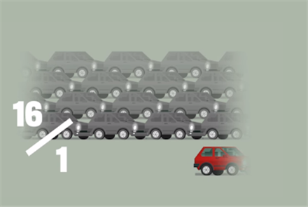
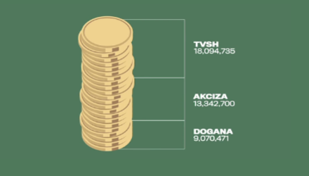
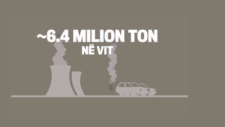
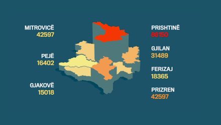
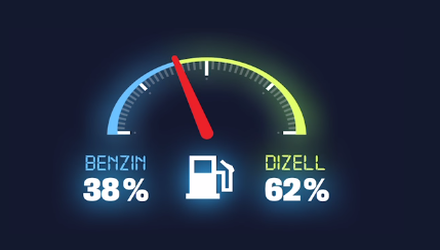

Vjetërsia mesatare e veturave të regjistruara në Kosovë në vitin 2014
Mesatarja e vjetërsisë së veturave që qarkullojnë në Kosovë është 18 vite, apo 10 vite më shumë se sa mesatarja e veturave që qarkullojnë brenda Bashkimit Evropian.
Importi i Veturave

Në vitin 2014 për çdo veturë të re të importuar, janë importuar 16 vetura të përdorura.
Të hyrat doganore nga veturat

Brenda dy viteve nga hyrja e vendimit në fuqi, Qeveria e Kosovës ka mbledhur rreth 21.8 milionë euro më shumë të hyra doganore nga veturat e përdorura, ndërsa rreth 3.2 milionë euro më shumë në vit nga veturat e reja.
Ndotja e ambientit

Djegia e një kilogrami benzinë jep 2.9 kilogram CO₂, kurse e njëjta sasi e dizelit jep 3.1 kg CO₂. Kosova importon rreth 500 milionë litra karburante në vit, rrjedhimisht djegia e karburanteve prodhojnë rreth 1.5 milion ton CO₂ në vit. Me futjen e veturave të vjetra pa dyshim që niveli i ndotjes do të rritet edhe më shumë.
Marka e Automjeteve
Burimi: Ministria e Punëve të Brendshme
Vendi i origjinës
Vendi i origjinës të veturave të reja 2010-2014
Burimi: Dogana e Kosovës
Komunat
Regjistrimi i veturave sipas regjioneve

Burimi: Ministria e Punëve të Brendshme
Lloji i Motorit
Importi i veturave të reja sipas llojit të motorrit 2010-2014

Mesatarja e vjetërsise së veturave të regjistruara në Kosovë 2010-2014
Rritjes së mesatares të vjetërsisë së veturave në masë të madhe i ka kontribuar vendimi i qeverisë i vitit 2011 për lejimin e importit të veturave të përdorura deri në 13 vite, nga 8 sa kishte qenë më herët.
Trendi i importit të veturave
Në qershor të vitit 2011, Qeveria e Kosovës zgjati kufirin për importimin e veturave të përdorura nga 8 në 13 vite. Nga grafi i mësipërm shohim se vendimi ka krijuar incentiva për importim të veturave të përdorura në Kosovë.
Burimi: Dogana e Kosovës
Struktura e të hyrave doganore nga veturat
Në total, në dy vitet e para pas implementimit të vendimit, të hyrat doganore nga veturat janë rritur për rreth 27.5 milion euro.
Emertimi i ndotësve të ambientit si funksion i moshës së veturës.
Të dhënat në grafin e mësipërm dëshmojnë për një marrëdhënie direkte në mes të moshës së veturës dhe sasisë së ndotjes. Rritje e dukshme e emetimeve vërehet kryesisht për vetura që janë më të vjetra se 15 vjet.
Marka e Automjeteve
Burimi: Ministria e Punëve të Brendshme
Vendi i origjinës së veturave të përdorura
Burimi: Dogana e Kosovës
Veturat e regjistruara sipas komunës
Burimi: Ministria e Punëve të Brendshme
Importi i veturave të përdorura sipas llojit të motorit